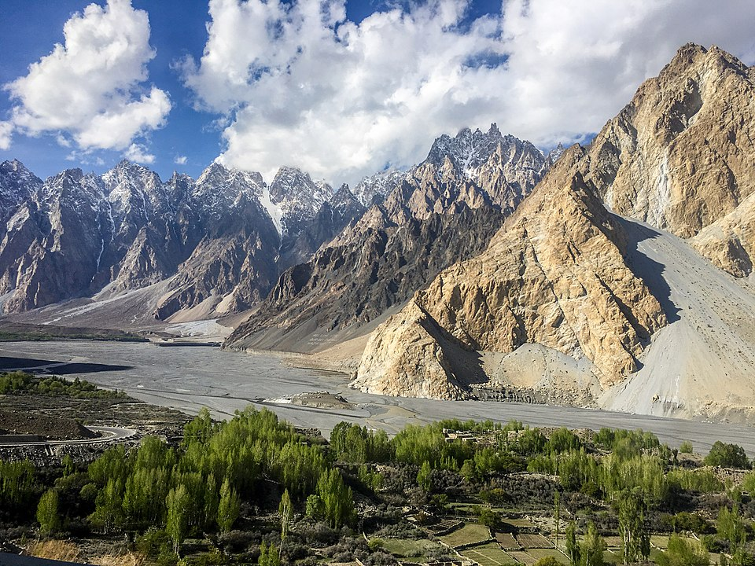
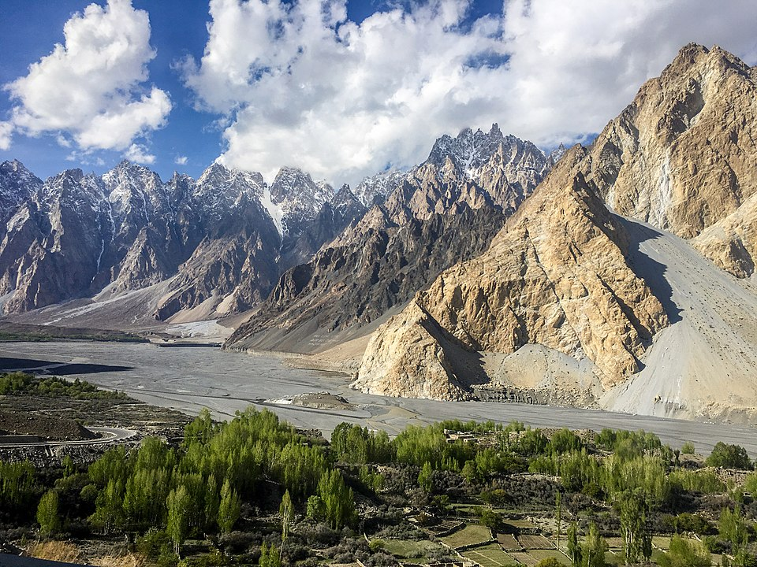
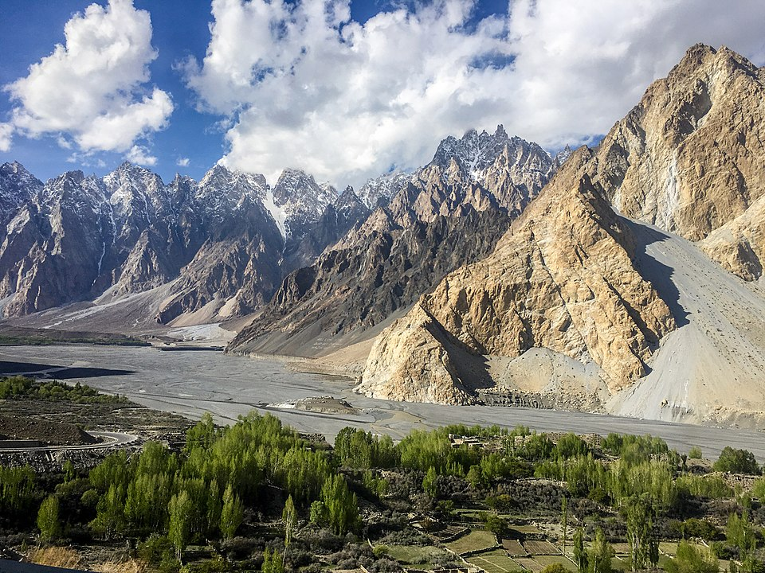
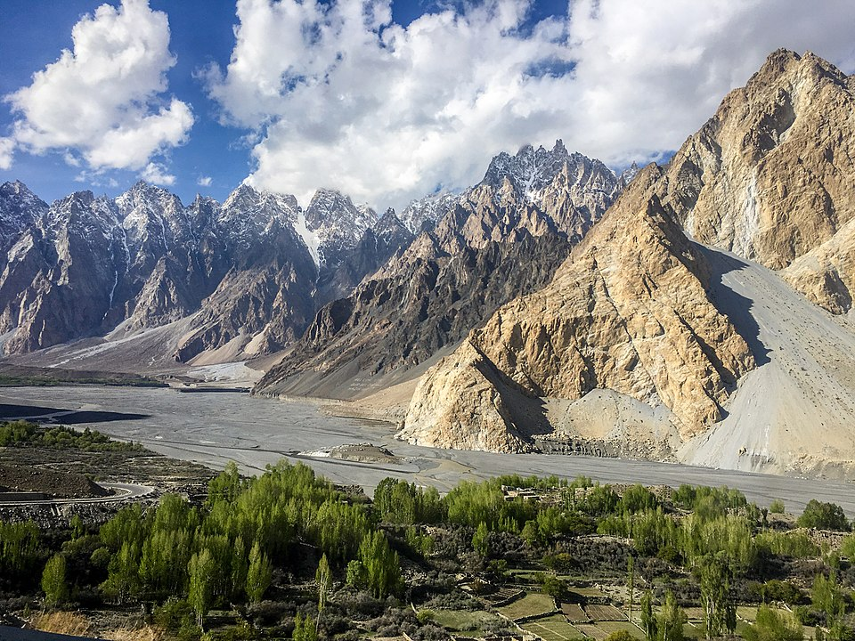

The crisp morning air was filled with the promise of adventure as I stood at the gateway to the Karakoram Range, ready to embark on a journey to Passu Cones, Pakistan.
This remote and mystical destination had beckoned to my soul for years, and now, I was about to unveil its secrets. Passu, a small village tucked away in the Hunza Valley, is the gateway to the Passu Cones – a group of magnificent peaks that soar high into the heavens. The beauty of this place is not just in the stunning scenery but in the warm-hearted people who call it home. Their traditional way of life has remained largely unchanged for centuries. As our journey began, the rugged terrain and dramatic landscapes were a constant reminder of the untamed wilderness that surrounded us. The indomitable Karakoram Range loomed overhead, casting its colossal shadow on the land below. Our first stop was the ancient Baltit Fort, a stone fortress that bore witness to centuries of history.
We wandered through the dimly lit chambers, where old tales seemed to echo off the walls. The fort offered panoramic views of the valley and the distant Passu Cones, our ultimate destination. Leaving the fort behind, we set out for Passu, a picturesque village nestled beside the Hunza River. Here, the inhabitants welcomed us with warm smiles and open arms. We were invited into a local home, where we shared stories and a traditional meal. The simple act of sipping chai in the company of newfound friends was a powerful reminder of the beauty of human connection.
The next morning, we set out early with our local guide, the towering Passu Cones our beacon. As we ventured deeper into the valley, we crossed pristine glacial streams and walked through fields of wildflowers. The vibrant colors of the landscape contrasted sharply with the ice-blue glaciers that descended from the peaks. The trek to the base of the Passu Cones was not for the faint of heart. The path led us through steep, rocky trails and narrow ridges, with every step bringing us closer to the jagged teeth of the mountains. As we climbed, the view grew more awe-inspiring with each passing moment. Finally, we reached the base of the Cones. They stood before us like sentinels guarding the secrets of the valley.
The sun bathed the peaks in a warm, golden light, casting long shadows that stretched across the glacier. It was a sight that left us all in reverent silence. We spent hours exploring the area, allowing the mountains to cast their spell on us. The serenity of the place was interrupted only by the occasional rumble of an icefall. It was as if the mountains were whispering ancient secrets to us, telling stories of their creation and the passage of time. As the day drew to a close, we made our way back to Passu village, our hearts heavy with the knowledge that our time in this enchanted place was coming to an end. The journey to Passu Cones had been a pilgrimage to a sacred land, a place where the majesty of nature and the warmth of its people intertwined. As we departed, we carried with us the memories of the mighty Passu Cones, the hospitality of the villagers, and the enduring spirit of the Karakoram Range. It was a journey that reminded me of the incredible beauty that lies hidden in the world's remote corners, waiting to be discovered by those willing to seek it.